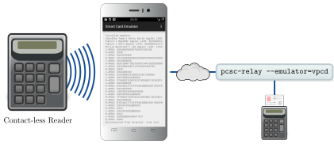

Android Smart Card Emulator¶
The Android Smart Card Emulator allows the emulation of a contact-less smart card. The emulator uses Android’s HCE to fetch APDUs from a contact-less reader. The app allows to process the Command APDUs either by delegating them to a remote virtual smart card or by a built-in Java Card simulator. The response APDUs are then returned to the smart card reader. Together with Tizen Smart Card Emulator it is also possible to use a smartwatch as communication device instead of the phone.
With the built-in Java Card runtime of jCardSim 1 the app includes the following Applets:
OpenPGP Applet 2 (application identifier
D2760001240102000000000000010000)OATH Applet 3 (application identifier
A000000527210101)ISO Applet 4 (application identifier
F276A288BCFBA69D34F31001)GIDS Applet 5 (application identifier
A000000397425446590201)
The remote interface can be used together with the Virtual Smart Card, which allows emulating the following cards:
Generic ISO-7816 smart card
German electronic identity card (nPA)
Electronic passport
The remote interface can also be used together with the PC/SC Relay, which allows emulating a contactless card from an existing contact-based card (by relaying the commands from PC/SC to the phone).
You may also attach your own simulation to the remote interface by implementing a simple interface through a socket communication.

Simulate a contact-less Java Card with Android Smart Card Emulator

Simulate a contact-less smart card with a remote virtual smart card

Relaying a contact-based smart card with pcsc-relay
The Android Smart Card Emulator has the following dependencies:
NFC hardware built into the smartphone for HCE
Android 4.4 “KitKat” (or newer) or CyanogenMod 11 (or newer)
permissions for a data connection (communication with Virtual Smart Card) and for using NFC (communication to the reader); scanning the configuration via QR code requires permission to access the camera
Virtual Smart Card installed on the host computer for using the remote interface
Please note that the currently emulated applets are verifying the PIN by transmitting it without any protection between card and terminal. You may want to have a look at Erik Nellesson’s Virtual Keycard 6, which uses the PACE protocol for PIN verification.
Download and Install¶
The Android Smart Card Emulator is available on F-Droid 7.

To manually compile the app you need to fetch the sources and initialize the submodules:
git clone https://github.com/frankmorgner/vsmartcard.git
cd vsmartcard
git submodule update --init --recursive
We use Android Studio 8 to build and deploy the application. Use
to select vsmartcard/ACardEmulator.
Attach your smartphone and choose .
Question¶
Do you have questions, suggestions or contributions? Feedback of any kind is more than welcome! Please use our project trackers.